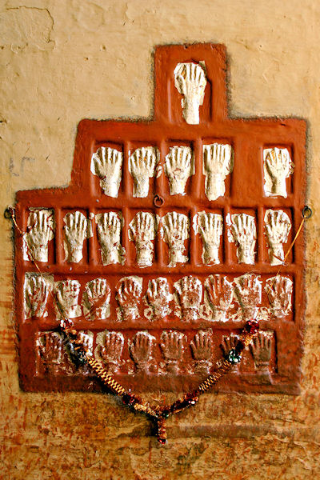
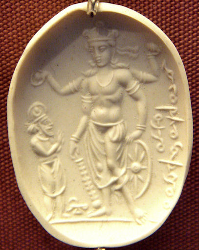

mailto:payer@payer.de
Zitierweise | cite as:
Payer, Alois <1944 - >: Sanskritkurs. -- 21. Lektion 21. -- Fassung vom 2008-12-12. -- URL: http://www.payer.de/sanskritkurs/lektion21.htm
Erstmals hier publiziert: 2008-12-12
Überarbeitungen:
Anlass: Lehrveranstaltungen 1980 - 1984
©opyright: Dieser Text steht der Allgemeinheit zur Verfügung. Eine Verwertung in Publikationen, die über übliche Zitate hinausgeht, bedarf der ausdrücklichen Genehmigung des Verfassers
Dieser Text ist Teil der Abteilung Sanskrit von Tüpfli's Global Village Library
Falls Sie die diakritischen Zeichen nicht dargestellt bekommen, installieren Sie eine Schrift mit Diakritika wie z.B. Tahoma.
Die Devanāgarī-Zeichen sind in Unicode kodiert. Sie benötigen also eine Unicode-Devanāgarī-Schrift.
| Dieses Partizip ist eine Nominalbildung
aus dem Präsensstamm, also ein echtes Partizip. Es ist ein Adjektiv,
das angibt, dass jemand oder etwas das durch die Verbalwurzel (+
Präverb) Ausgedrückte gerade tut, während etwas anderes geschieht.
Auch ein dauernder Zustand kann damit ausgedrückt werden. Beispiele:
|
| Bildung des Partizip Präsens
Parasmaipada zu thematischen Präsensstämmen:
|
||
| Maskulinum, Neutrum | ||
| starker Stamm | Präsensstamm + -nt- | |
| schwacher Stamm | Präsensstamm + -t- | |
| Femininum | ||
| Präsensstamm + -nt- + -ī (Deklination wie देवी) | ||
| 6. Präsensklasse | Präsensstamm + -nt- + -ī oder: Präsensstamm + -t- + -ī |
|
Beispiele:
1. Präsensklasse:
यजब्त् "ein mit einem Opfer verehrender"
Maskulinum
पुंस्Neutrum
नपुंसकFemininum
स्त्रीSingular
एकवचन1. Nominativ
प्रथमायजन्
aus yaja-nt-sयजत्
yaja-t-Øयजन्ती
yaja-ant-ī2. Akkusativ
द्वितीयायजन्तम्
yaja-nt-amयजत् wie देवी 3. Instrumentalis
तृतीयायजता
yaja-t-āयजता 6. Genetiv
षष्ठीयजतस्
yaja-t-asयजतस् Plural
बहुवचन1. Nominativ
प्रथमायजन्तस्
yaja-nt-asयजन्ति
yaja-nt-i
Beachten Sie den Gleichlaut mit der 3. pl. P.!2. Akkusativ
द्वितीयायजतस्
yaja-t-asयजन्ति 3. Instrumentalis
तृतीयायजद्भिस्
aus yaja-t-bhisयजद्भिस् 6. Genetiv
षष्ठीयजताम्
yaja-t-āmयजताम्
4. Präsensklasse
नृत्यन्त् "tanzend"
- Maskulinum Nom. sg. नृत्यन्
- Neutrum Nom. Akk. sg. नृत्यत्
- Femininum Nom. sg. नृत्यन्ती
6. Präsensklasse
विशन्त् "eintretend"
- Maskulinum Nom. sg. विशन्
- Neutrum Nom. Akk. sg. विशत्
- Femininum Nom. sg. विशन्ती । विशती
| Bildung des Partizip Präsens
Parasmaipada zu athematischen Präsensstämmen (außer 3.
Präsensklasse):
|
||
| Maskulinum, Neutrum | ||
| starker Stamm | Präsensstamm + -ant- | |
| schwacher Stamm | Präsensstamm + -at- Der Auslaut des schwachen Präsensstammes lautet gleich wie vor der 3. Plur. P |
|
| Femininum | ||
| Präsensstamm + -at- + -ī (Deklination wie देवी) | ||
Beispiele:
2. Präsensklasse:
अस् "sein": सन्त् "seiend, echter, guter, wahrer"
Maskulinum
पुंस्Neutrum
नपुंसकFemininum
स्त्रीSingular
एकवचन1. Nominativ
प्रथमासन्
aus s-ant-sसत्
s-at-Øसती1
s-at-ī2. Akkusativ
द्वितीयासन्तम्
s-ant-amसत् wie देवी 3. Instrumentalis
तृतीयासता
s-at-āसता 6. Genetiv
षष्ठीसतस्
s-at-asसतस् Plural
बहुवचन1. Nominativ
प्रथमासन्तस्
s-ant-asसन्ति
s-ant-i2. Akkusativ
द्वितीयासतस्
s-at-asसन्ति 3. Instrumentalis
तृतीयासद्भिस्
aus s-at-bhisसद्भिस् 6. Genetiv
षष्ठीसताम्
s-at-āmसताम् 1 सती "eine gute (treue) Frau (die sich in späterer Zeit nach dem Tod ihres Mannes mit diesem verbrennen lässt)" engl.: sutee

Abb.: सती-Gedenkplatte im Palast von Jodhpur - जोधपुर / Rajasthan - राजस्थान
[Bildquelle: Flicka / Wikipedia. GNU
FDLicense]
5. Präsensklasse:
सु "pressen" सुन्वन्त्
- Maskulinum Nom. sg. सुन्वन्
- Neutrum Nom. Akk. sg. सुन्वत्
- Femininum Nom. sg. सुन्वती
8. Präsensklasse
कृ "tun": कुर्वन्त्
- Maskulinum Nom. sg. कुर्वन्
- Neutrum Nom. Akk. sg. कुर्वत्
- Femininum Nom. sg. कुर्वती
| Maskulinum, Neutrum | ||
| starker Stamm | महान्त् | |
| schwacher Stamm | महत् | |
| Femininum | ||
| महती wie देवी |
| Maskulinum पुंस् |
Neutrum नपुंसक |
Femininum स्त्री |
||
|---|---|---|---|---|
| Singular एकवचन |
1. Nominativ प्रथमा |
महान् aus mahānt-s |
महत् mahat-Ø |
महती mahat-ī |
| 2. Akkusativ द्वितीया |
महान्तम् mahānt-am |
महत् | wie देवी | |
| 3. Instrumentalis तृतीया |
महता mahat-ā |
महता | ||
| 6. Genetiv षष्ठी |
महतस् mahat-as |
महतस् | ||
| Plural बहुवचन |
1. Nominativ प्रथमा |
महान्तस् mahānt-as |
महान्ति mahānt-i |
|
| 2. Akkusativ द्वितीया |
महतस् mahat-as |
महान्ति | ||
| 3. Instrumentalis तृतीया |
महद्भिस् aus mahat-bhis |
महद्भिस् | ||
| 6. Genetiv षष्ठी |
महताम् mahat-ām |
महताम् |
| Als Vorderglied eines Kompisitums steht
statt महत् महा: z.B.
|

Abb.: महादेवो विष्णुः
[Bildquelle: PHGCOM / Wikipedia. GNU FDLicense]
"A 4th-6th century CE Sardonyx seal representing Vishnu with a worshipper. The inscription in cursive Bactrian reads: "Mihira, Vishnu and Shiva".
| Nach kurzem Vokal werden auslautende
Nasale - außer -m - vor anlautendem Vokal verdoppelt. z.B.
|
| Man kann im Sanskrit, ohne unhöflich zu
sein, jemanden in der 2. Person Singular ansprechen. Will man aber
höflich sein, kann man ein Nomen verwenden, dessen Bedeutung
"Ehrwürdiger" und dergleichen ist, und das Verb in die 3. Person sg.
oder pl. setzen bzw. eine Passivkonstruktion verwenden. Die
Steigerung der Höflichkeit im Gebrauch der Person bei der Anrede ist
etwa folgende: 2. sg. » 2. pl. » 3. sg. mit entsprechendem Nomen » 3. pl. mit entspr. Nomen Das wichtigste solche Höflichkeitsnomen ist भवन्त् , fem.: भवती . Es entspricht in seiner Verwendung unserem höflichen "Sie". |
Dieses भवन्त् ist eine Zusammenziehung aus भगवन्त्, seine Deklination ist die der Nomina auf -vant (siehe Lektion 13). Dieses भवन्त् ist zu unterscheiden vom Partizip Präsens P von भू "werden" भवन्त् : der Nom sg. mask. von भवन्त् "Sie" lautet भवान्, der des Partizips भवन्.
Beispiele:
किं भवान्करोति = किं भवता क्रियते = "Was tun Sie?"
höflicher:
किं भवन्तः कुर्वन्ति = किं भवद्भिः क्रियते
Femininum:
किं भवती करोति = किं भव्त्या क्रियते
किं भवत्यः कुर्वन्ति = किं भवतीभिः क्रियते
Weitere Wörter, die ähnlich wie भवन्त् verwendet werden können:
आर्य (f.: आर्या) "Edler". z.B. यदार्य इच्छति "Was Sie wünschen"
महाभाग "der dessen Anteil / Glück groß ist = Vornehmer". Oft verwendet von Frauen bei der Anrede oder beim Sprechen über Männer von gutem Stand. In modernem gesprochenem Sanskrit sehr häufig.
Will man nicht nur Höflichkeit, sondern auch Verehrung für jemanden ausdrücken, verwendet man bei jemandem, der anwesend oder in der Nähe ist, anstelle von भवन्त् अत्रभवन्त् , für jemanden Abwesenden oder Entfernten तत्रभवन्त्. अत्रभवन्त् und तत्रभवन्त् kann man mit "Sie", "Ehrwürden", "Hochwürden" usw. übersetzen:
किमत्रभवत्यत्रभवतां भार्या = "Ist die gnädige (hier anwesende) Frau Ihre Gattin?"
किं तत्रभवतां कुशलवृत्तम् (in einem Brief oder Telefongespräch) = "Geh es Ihnen gut?"
भज् 1 U भजति Pass. भज्यते PPP भक्त : jemandem (Akk.) etwas zuteilen, zukommen lassen, jemanden lieben, ehren, verehren
davon:
भक्ति f.: Ergebenheit, Treue, Liebe (im religiösen Bereich: Liebe und Respekt zu einem persönlichen Gott. siehe dazu Basham, Wonder S. 332f.)
भाग m.: Anteil, Teil
भग m.: (guter) Anteil, Glück, Wohlergehen, Würde
भगवन्त् 3: Glück-besitzend, Würde-besitzend (Beiname von विष्णु - कृष्ण)
Abb.: भगवान्कृष्णः als जगन्नाथ (rechts) mit seiner Halbschwester
सुभद्रा (Mitte) und
seinem älteren Bruder बलराम
Orissa = ଓଡ଼ିଶା
[Bildquelle: Sujitkumar
/ Wikipedia. GNU FDLicense]
भगवद्गीता f.: "Gesang (गीता) des Würdigen (कृष्ण)"
Abb.: भगवद्गीता - Manuskript, 19. Jhdt.
[Bildquelle: Wikipedia, Public domain]भिक्ष् 1 Ā भिक्षते Pass. भिक्ष्यते PPP भिक्षित (eigentlich ein Desiderativum zu भज्: wünschen, dass man teilhat): betteln
davon:
भिक्षु m.: Bettler, Mönch
Abb.: भिक्षवः
Luang Prabang = ຫລວງພະບາງ, Laos = ປະເທດລາວ
[Bildquelle: Hanoi Mark. --
http://www.flickr.com/photos/riverdaleto/112938743/. -- Zugriff am
2008-12-12. --

 Creative
Commons Lizenz (Namensnennung, keine kommerzielle Nutzung)]
Creative
Commons Lizenz (Namensnennung, keine kommerzielle Nutzung)]
दुष् 4 P दुष्यति Pass. दुष्यते PPP दुष्ट : verderben (intransitiv), schlecht werden, zuschande werden
दोष m.: Fehler
पच् 1 U पचति Pass. पच्यते (kein PPP, dafür पक्व 3: gekocht, gegart) Absol. पक्त्वा : garen (transitiv) = kochen, braten, rösten usw.
A) Übersetzen Sie folgende Komposita:
१. अनादिकालिकसंसरः
२. अनादिमध्यान्तः
३. महामैत्रीकरुणाचित्तः
४. सर्वहतान्धकारः
B) Übersetzen Sie:
मृतं दहन्नग्निः सतीमपि दहति ॥१॥
सद्गुरुर्महाकविस्तोत्रैर्महादेवं स्तौति ॥२॥
महान्ति फलान्यदन्तो बाला जलमापि पिबन्ति ॥३॥
पुजां कुर्वञ्जनो यजते च स्तौति च देवताम् ॥४॥
गुरूपनीतनरो द्विजः ॥५॥
जितक्रोधो घ्नन्तमप्यरिं न द्वेष्टि । क्रोधजितस्तु द्वेष्टि ॥६॥
Zu Lektion 22